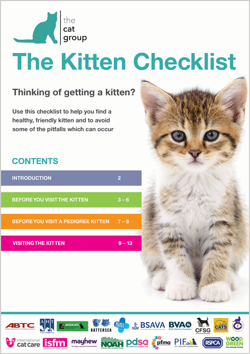

Traductor de Google
Traductor de Google
Having a cat can mean different things to different people. Some want a cat to cuddle and sit on their laps; others are happy to live with a very independent cat which spends most of its time outside and doesn’t want too much human interaction.
What is important is that you try to find a cat that will interact with you if you want it to. All cats are not the same and how each individual cat behaves with you can depend on its inherent personality and early experiences (or lack of experiences), which can make it fearful or confident with people and life in general.
The environment in which you keep a cat is also extremely significant – for example if it lives with many other cats which do not get on, then it will be stressed and will react differently than if it was on its own.
While there is no guaranteed way to choose the perfect cat for you and your lifestyle, understanding your expectations as well as what makes cats tick will help you to bring home a cat that should be able to cope with its new environment and be the pet that you want too.
To care for a cat you will need to:
- Provide plenty of human companionship
- Provide regular, suitable meals with a constant supply of fresh water
- Provide a clean and comfortable bed
- Provide the cat with outdoor access or be prepared to empty and clean a litter tray on a daily basis
- Provide it with a stimulating and safe environment
- Groom it regularly. Longhaired cats require daily grooming
- Have it neutered between 4 and 6 months old
- Vaccinate against the major feline diseases regularly
- Worm regularly and provide treatment for fleas
- Take the cat to the vet when it shows any sign of illness
- Insure your cat or make sure you can afford the cost of any veterinary treatment it may need
How much care and attention does a cat need?
As pets go, cats are relatively low maintenance compared to dogs which need companionship, walking, training etc. However, like any pet, they do need care, and some cats need more care than others. Do you want to spend a lot of time with your cat, do you want it to be demanding, or do you have limited time? Cats can fit into busy, modern lifestyles more easily than dogs, as they are pretty independent, can be left alone much more easily and are more suitable for smaller flats or houses. Cats are often chosen by people who have busy and stressful lifestyles and who want some companionship when they go home to relax.
What do you want from your relationship with a cat? If you’re the kind of person who really needs to have a close relationship with your cat and to be able to handle it and have it interact with you, then you’ll be disappointed if you take on a nervous cat that hides every time you come into the room. You may want to think about one of the pedigree breeds which can be more interactive and perhaps more needy of human company than some moggies. This may however become a problem for the cat if you are out at work all day and only available to give attention on evenings or weekends.
Some cats need to know exactly what’s going to happen when, in order to feel relaxed. Such cats would be quite happy living with an old lady who rarely has visitors and leads a very quiet life, but would probably find it quite stressful living in a home full of kids and other animals with lots of visitors and activity. Other cats, however, might thrive on different interactions with lots of people and fit in perfectly well in a busy household.
If you’re not likely to have the time or inclination to groom a cat on a daily basis, don’t even think of getting a Persian or a cat with a long coat. In pedigree jargon, any cat with a longer coat, aside from a Persian, is called semi-longhaired because the coat is not as full as the Persian’s and does not have such a thick undercoat; however, it is still long and requires grooming. In addition, if you are extremely house-proud, you may not want lots of hair everywhere.
A shorthaired cat is a much easier option, as most cats are fanatical about their coats and keep them in immaculate condition. That’s not to say that they don’t leave hairs around – bear this in mind if you’re thinking of getting a white cat but have dark furniture, or vice versa. Likewise, a cat is quite likely to sharpen its claws indoors, often on the stair carpet, sometimes on the furniture or even on the wallpaper. Whether your cat does this can depend on the cat itself and also the environment you provide for it; however there are things you can do to try and deal with this, but it is best to acknowledge from the outset that your cat is an animal with free will and natural behaviour that may not suit someone who needs to have an immaculate house.
Can I keep a cat on vegetarian food?
Are you a vegetarian and want your cat to be one too? If you want a vegetarian pet that won’t challenge your beliefs, then it would be better to get a rabbit – a cat is a carnivore first and foremost, and looks and behaves as it does for just this reason. A cat is what is called an obligate carnivore – it has an absolute need for some of the nutrients found in meat and all of its senses of smell and taste are atuned to being a carnivore – it would be unfair and very dangerous to health to even attempt keeping it as a vegetarian.
Feeding your cat or kitten
Is there a type of cat which doesn’t hunt?
You may have a great aversion to your cat hunting outside. Perhaps you are a bird lover, or are simply unable to deal with small carcases on the floor. Hunting is normal behaviour for cats. Keeping a cat indoors may prevent it actually killing anything, but it will still need an outlet for this, its most instinctive behaviour, and not all cats will be happy with an indoor lifestyle. Likewise, if you’re simply getting a cat to keep vermin at bay, you won’t want to find yourself with one which isn’t especially interested in huntin’, shootin’ and fishin’ and prefers being a couch potato! Older cats are likely to hunt much less than younger ones and some cats don’t bother at all, but there is no easy way to know how a cat will behave.
Can I keep a cat indoors?
If you think about the lifestyle of a cat which has access outdoors you will realise that being outdoors brings a huge variety to its life and allows it to use all of its hunting behaviours if it wants to. Of course, there are risks outside for cats, but you need to balance these with the very positive aspects of physical and mental stimulation and an outlet for natural behaviour.
Indoors versus outdoors
Can I have a cat with a baby or young children?
There is no reason not to have a cat or kitten if you have children. It is up to parents to teach their children from the very beginning how to approach, stroke and handle cats and to treat them kindly. Many children have fantastic relationships with their cats and learn about respecting other creatures and being gentle – it is done successfully all the time, but it is up to parents to lay down the rules. Perhaps taking on a new kitten when you have a new baby or a toddler might be a lot to handle at once, so ensuring you have time for all the parties is part of a successful relationship. Likewise, if you are pregnant there is no need to get rid of the cat. Simple and basic hygiene precautions and common sense management of the cat, while the baby is small, can ensure all cohabit happily and safely.
Should I get an adult cat or a kitten?
A kitten gives you the opportunity to take on an animal right from the beginning and treat it and care for it so that it gets the best start in life. You will also be able to get some idea of its character. However, kittens require a lot of attention and some forethought to prevent them from getting into trouble. If you leave them alone you have to make sure they will be safe while you are away. You may also have to organise neutering, initial vaccinations and so on, depending on where you get your kitten from.
Where to get a cat or kitten and what to ask
While kittens have a huge ‘cute’ factor, it is worth remembering that they don’t stay kittens for very long – just six months out of a potential 14 years or more.
With adult cats, it is at least clear if they are long or short haired. You should be able to get a good idea of a cat’s personality, although if it is being kept in less than ideal circumstances and is stressed or frightened it may act very differently compared to when it is relaxed. A confident adult cat is likely to move in and settle down quite quickly; a nervous one may take more time. It will be much easier to leave an older cat alone in the knowledge that it is not going to get itself into trouble, and it will generally be much less hard work and worry than a kitten. An adult cat will probably already be neutered and vaccinated.
Choosing an adult cat and where to get one
What sex of cat should I get?
The sex of a kitten doesn’t really matter, as long as you neuter your kitten before it reaches puberty (at about four months of age) when the influence of sex hormones kick in. Un-neutered cats may exhibit unwelcome reproductive behaviours. For example, un-neutered male cats will mark their territory with strong smelling urine while un-neutered female cats can come into season every two weeks if they do not become pregnant.
If you are getting just one cat or kitten, it doesn’t matter which sex you choose. Equally, if you want two kittens and you are getting two from the same litter, the sex of either cat is probably not important. However, if you have a resident cat and are getting just one kitten or another cat, it may be worth considering going for one of the opposite sex to try and remove some of the competition factor. A kitten may be a better option than another adult cat in such cases as the young cat’s immaturity seems to remove this competition factor – for a while anyway during which time you hope they will get to like each other! Neutering also removes the need for so much competition and makes the choice of sex much less important.
How to tell what sex a kitten is
Should I choose a specific breed or moggie?
The majority of cats kept as pets are what we call moggies or domestic short or long haired cats – that is they are a random mixture of lots of different cats, we have often have little idea about their parentage (well the father anyway). This means we have no control over the colour, body shape, coat length or anything else that the kittens can inherit from their parents. So, for example, if your kitten is from a moggie mum but its father is unknown, it may develop a longer coat than you desire if the father was indeed longhaired.
There is more to choosing a pedigree cat than just liking a certain coat colour or length – there are ethical considerations with some breeds if you really want to consider the cat’s welfare. There are also health issues which you need to check with the breeder and things you need to ask. Good breeders aim to breed healthy, people-friendly cats and avoid (or seek to deal with) inherited disorders which arise.
Pedigree cats – things to consider
What breed of cat should I choose?
There are many different breeds, some of which will require extra care and attention, for example if they have a very long coat or even no coat at all. (See our A-Z of cat breeds). Some pedigree cats are more people orientated and may not like to be left alone for long periods. If you are out all day at work it may be worth getting two kittens together for company – do your research about the breed you are interested in. Always make sure that health comes first, no matter what the ‘look’.
How to choose a kitten
Can I have a cat if I have a dog?
If you have other pets there should not be a problem in getting a cat, but you just need to make sure that you take everything into consideration. If you have a dog you just need to make sure that you make introductions carefully so that your new cat is not chased or injured while the dog gets used to it. Not all dog types make good companions for cats.
How to introduce a new cat or kitten to a resident dog
How many cats can I have together?
It’s very easy to ‘collect’ cats – they’re addictively beautiful, they’re small and they’re quite easy to care for. Even if they don’t get on, they tend to remove themselves from the situation rather than fight. However, there may be a great deal of tension between cats which owners just don’t pick up on. Cats originate from a largely solitary species and although they can live in groups these are usually related individuals or are self-selected so that cats are not sharing space with cats that they don’t get on with. Cats may start to spray or soil in the house because they’re trying to deal with a situation where they feel under stress because of other cats, and this might be all that owners notice.
If you have two cats living together very successfully then think very carefully before you add more. If you have three cats living well together then thank your stars and quit while you’re ahead! The trouble with adding more is that it might not be just the relationship between the resident cats and the new one that causes problems; it may upset the whole equilibrium of the resident cats’ relationship and introduce difficulties even between the original cats as tension and stress levels rise. Any new cat needs careful introduction.
How to introduce a new adult cat to your cat.
The best way to have two compatible cats is to choose siblings. These will have grown up together, and this usually bodes well for a good future relationship (although never guaranteed!).
What does it cost to keep a cat?
If you are buying a pedigree cat then there will be associated costs and these may be quite large. Pedigree kittens usually come vaccinated and in some cases already neutered. If you are getting a cat from a rescue organisation then they may ask for a donation or a fee and again it will probably come already neutered and vaccinated. Kittens or cats from friends or neighbours don’t usually come neutered or vaccinated, wormed, treated for fleas or anything else and it will be up to you to register with a vet and get these things done. Neutering is obviously a one-off cost, but several vaccinations will be required to make sure that a kitten is protected from infectious diseases; thereafter a regular booster vaccination will help to protect it during its life (requirements depend on the cat’s lifestyle and risks associated with that – your vet can advise you). Then there is food, preventive health care regarding treatment for fleas and ticks and worms, cat litter if you want or need an indoor litter tray, beds and grooming equipment if you take on a longhaired cat. Microchipping is also recommended in case your cat goes missing. We recommend that you also insure your cat so that if an accident or illness happens then you do not have to worry about the costs. Choose your insurance carefully to make sure you get what you expect or need.
I am allergic to cats – is there any breed which is better than others?
Many people think it’s a cat’s hair that causes us to react to them by sneezing, wheezing or itching. In fact it’s a protein or allergen called Fd1, present in feline saliva, which causes the allergy. Because cats groom themselves regularly they have saliva all over their coat. This dries on the coat and when the cat scratches, moves or brushes past objects the dust or dander and the hairs which contain the allergen are spread about. Cat-lovers who really want to have a cat but are allergic sometimes think that by choosing a breed with less, little or no coat they can avoid the problem. However, as it is saliva that causes the problem, this is unlikely to help, and although longhaired cats do seem to cause more allergic reactions that’s probably only because, having more hair, they’re also covered with more allergen.
It’s worth trying out different cats by visiting friends with cats to see if they elicit less of an allergic reaction. Unfortunately it’s a very difficult problem to get around for people who react or who have family members who are allergic.
What should I do with my cat when I go on holiday?
If you go away on holiday you also need to consider who is going to look after your cat. If you are only away for a day or two you can ask a neighbour to pop in and feed it and check it is OK. If you are away for more than this you may want to consider a boarding cattery, as many cats may wander looking for company. If you have a nervous cat it may hide when the feeder comes and he or she may not be able to be sure that everything is all right. A good boarding cattery will keep your cat safe and you can relax while you are away. There are bad boarding catteries however.
How to choose a good boarding cattery
When should I get a new cat?
If you are considering getting a new cat or kitten, choose a time when it is quiet in your house (not in the middle of a family celebration etc) and perhaps when you have a day or two when you can help it to settle in and be there while it finds its way around, not just before you go on holiday etc.
Where do I get a cat from and how do I choose it?
Once you have thought about the responsibilities and costs of keeping a cat and what type you want, then consider where you are going to get it and how you are going to choose your cat or kitten.

The Kitten Checklist
The Kitten Checklist has been put together by 20 animal and veterinary organisations, to help you make an informed decision when choosing a kitten. It will help you find a healthy, friendly kitten and avoid some of the pitfalls which can occur.
View/download The Kitten Checklist
Thank you for visiting our website, we hope you have found our information useful.
All our advice is freely accessible to everyone, wherever you are in the world. However, as a charity, we need your support to enable us to keep delivering high quality and up to date information for everyone. Please consider making a contribution, big or small, to keep our content free, accurate and relevant.
Support International Cat Care from as little £3
Thank you.
Donate Now